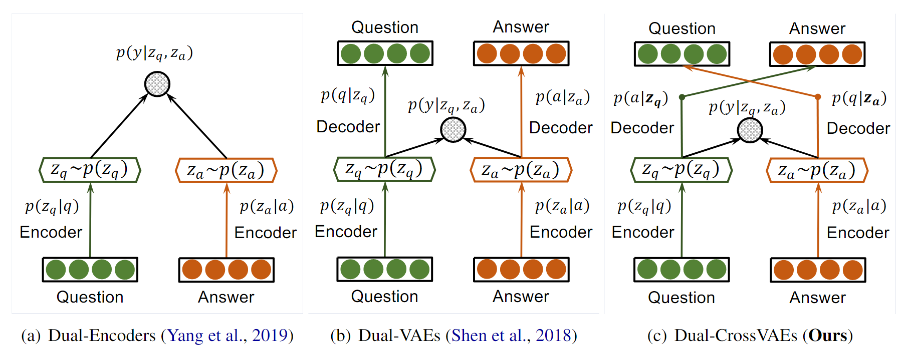
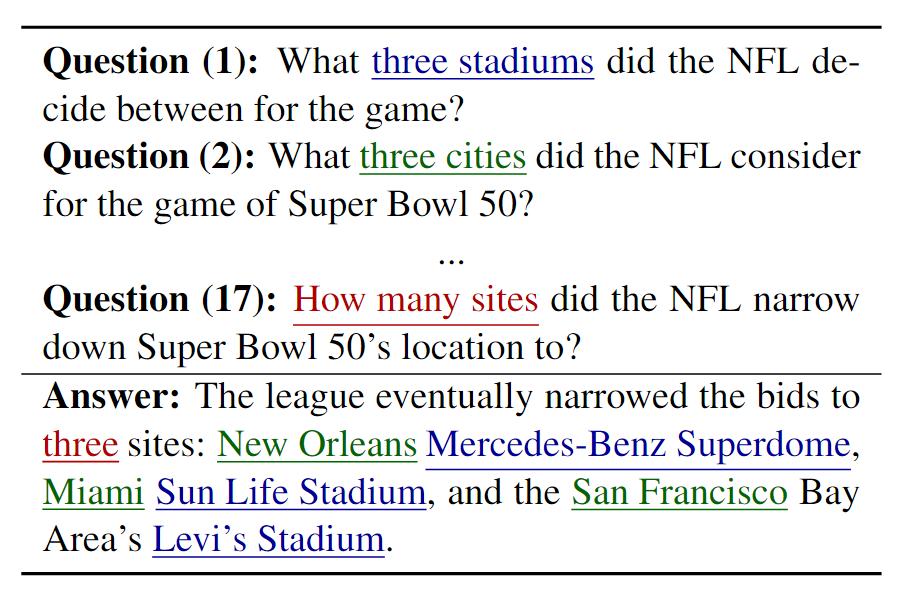

有错误论文 - ACL2020：交叉 VAE 用于答案检索
摘要
最近读了一篇想法有趣、公式有错误、复现不出来的 ACL 论文。发出来分享一下。希望大家也不要迷信 ACL 论文，读论文过程中保持独立思考。
《Crossing Variational Autoencoders for Answer Retrieval》提出了一种基于交叉 VAE 的答案检索方法，通过交叉 VAE 来对齐答案和问题之间的语义。论文收录于 ACL 2020 中。
介绍
先按照正常的步骤介绍其背景和方法。
答案检索，即从答案候选集合中，选择最匹配问题的答案。解决该问题的一个关键因素在于，如何学习到一个好的问题 / 答案的向量表示。传统的方法使用两个编码器 / 变分自编码器（孪生网络）分别学习二者的向量表征。这种方法过于分离，无法捕捉二者之间的对齐语义。因此，本文提出了交叉变分自编码器，类似 Seq2Seq 的方法，学习二者间的语义对齐。

如上图所示。左一为孪生编码器，分别将答案和问题进行编码，得到向量表征后再判断是否匹配。中间的孪生自编码器也类似，区别在于使用自编码器学习到性质更好的向量表征。但是他们有个共同点：答案和问题的向量表征是分开编码得到的。这意味着编码过程中只有单个问题或答案的信息（语义、句法等），而我们关心的是答案和问题是否语义对齐。因此按前一种方法训练得到的向量表征，并不能很好地满足任务的需要。右一为本文提出的孪生交叉 VAE，即在 VAE 的基础上，使用问题和答案的隐变量重构彼此，而非重构自身。从模型结构上，该模型不像 VAE 而更像 Seq2Seq。
举个例子，在问答中，相似的问题的答案可能相去甚远，相似的答案的问题形式可能也差别很大。下图展示了 SQuAD 数据集上的例子，同一个答案与 17 个不同的问题相对齐。只看这些问题的语义，可能差别很大。也就是 \(z_q\) 是分开的，而答案却相同，即 \(z_q\) 是固定的。这种情况下，希望 \(p(y|z_q,z_a)\) 对这些不同的 \(z_q\) 都有较好的对齐效果是比较困难的。

究其根本，是同一个答案与不同的问题对齐时，其语义信息侧重点各不相同。当提问词是 "how many"是，答案侧重点为"three"，当提问词为"three cities"时，答案侧重点为"New Orleans"... 而分开编码得到的向量表征是固定的。要解决这个问题，必须要将答案和问题的编码结合起来。
论文的方法在 MRR 和 R@1 上分别取得了 SOTA，分别提升了 1.46% 和 3.65%。不过对比工作里的 BERT 我怀疑是未做 finetune 的，效果太差了。
方法
问题定义
问题集合：\(q\in \mathcal Q\)，答案集合：\(a\in\mathcal A\)。对齐关系三元组定义为 \((q,a,y)\)，其中 \(y\) 为一个二值变量，标识对齐关系。任务定义为，给定一个问题 \(q\) 和一组候选答案 \(C(q)\sub \mathcal A\)，对每个候选答案 \(a\in C(q)\) 预测 \(p(y|q,a)\) 的值。
交叉 VAE
根据条件分布 \(p(q|z_a),p(a|z_q)\) 学习交叉重构，\(z_a,z_q\) 为变分自编码器的连续隐变量，交叉重构定义为： \[ p(q|a)=\mathbb E_{z_a\sim p(z_a|a)}[p(q|z_a)]\\ p(a|q)=\mathbb E_{z_q\sim p(z_q|q)}[p(a|z_q)] \] 问答对的匹配，即计算条件分布 \(p(y|a,q)\)，等价于 \[ p(y|a,q)=\mathbb E_{z_q\sim p(z_q|q),z_a\sim p(z_a|a)}[p(y|z_a,z_q)] \] 目标函数包含三部分：
交叉重构损失，即两个交叉熵损失之和，公式如下。其中 \(E,D\) 分别代表编码器、解码器。 \[ \mathcal L_{cross}(\theta_E,\theta_D)=y\cdot \mathbb E_{q\sim Q}[-logp_D(q|a,E(a))]+ y\cdot\mathbb E_{a\sim A}[-logp_D(a|q,E(q))] \] KL 散度损失，两部分后先验 KL 散度之和，公式如下： \[ \mathcal L_{KL}(\theta_E)=y\cdot \mathbb E_{q\sim Q}[D_{KL}((p(z_q|q)||p(z_q))]+ y\cdot \mathbb E_{a\sim A}[D_{KL}((p(z_a|a)||p(z_a))] \] 问答匹配损失，最后输出的匹配结果的交叉熵损失，公式如下。其中，\(f\) 为匹配函数。 \[ \mathcal L_{matching}(\phi_f)=-[y\cdot logp_{f_\phi}p(y|z_q,z_a)+(1-y)\cdot logp_{f_\phi}(1-p(y|z_q,z_a))] \] 最后，将三个损失相加，即得到了最终的目标函数，并引入超参数控制权重： \[ \mathcal J=-\alpha \mathcal L_{cross}-\beta\mathcal L_{KL}+\gamma\mathcal L_{matching} \]
问题
细心的读者可能会发现了，你是要最小化匹配损失，最后的 \(\mathcal J\) 应该也是要最小化的。那不就变成最大化 KL 和重构损失了吗？对，这就是问题所在。论文中提到是要最大化 ELBO 和最小化匹配损失，得到了最后的 \(\mathcal J\)。然而事实上，\(\mathcal L_{crosss}+\mathcal L_{KL}=-ELBO\)，最小化 \(\mathcal L_{crosss}+\mathcal L_{KL}\) 才是在最大化 ELBO。论文作者根本没有分清楚 VAE 的 ELBO 和损失，最后闹出了这种笑话。加之论文中有将 objective 和 loss 混用且使用错误的情况。也侧面印证了这一事实。正确的损失函数应该形如： \[ \mathcal J=\alpha \mathcal L_{cross}+\beta\mathcal L_{KL}+\gamma\mathcal L_{matching} \] 复现性上，我问了实验室的一个师兄，说是论文的结果是复现不出来的，论文也没有公开代码。再加上我本人看到这篇论文第一感觉的强烈违和感，将 VAE 改为 Seq2Seq 的形式，整个 VAE 的公式可能都要重新推导，只改最后的 ELBO 如何保证过程正确？CVAE 可能才是更自然的想法。
总结
读到这里，这篇论文已经没有读下去的必要了。把阅读经验分享出来，希望大家读论文的时候也加以辩证，不要迷信顶会论文，尤其是不开源代码和模型的论文。
科研路漫，诸君共勉。